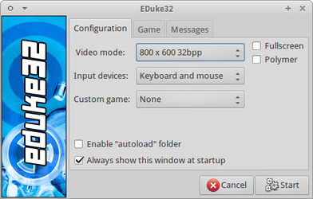
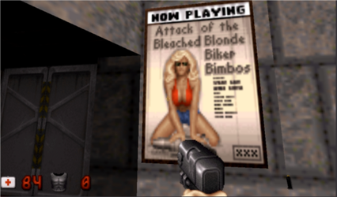
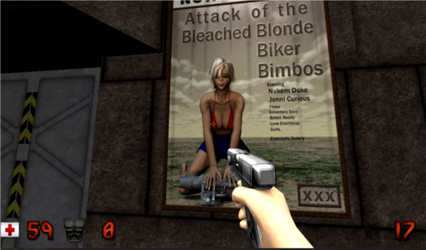

Duke Nukem 3D
Dieser Artikel wurde für die folgenden Ubuntu-Versionen getestet:
Ubuntu 16.04 Xenial Xerus
Ubuntu 14.04 Trusty Tahr
Zum Verständnis dieses Artikels sind folgende Seiten hilfreich:
Root-Rechte, optional
Pakete aus dem Quellcode erstellen, optional
Ein Terminal öffnen, optional
Ein Programm ohne Menüeintrag starten, optional
Programme zum Menü hinzufügen, optional
Duke Nukem 3D  (Duke 3D) ist ein PC-Spiel, das als dritter Teil der Spieleserie Duke Nukem im Jahre 1996 veröffentlich wurde. Ursprünglich für MS-DOS entwickelt wurde das Spiel nach Veröffentlichung des Quelltextes von Apogee Games auf Linux portiert.
(Duke 3D) ist ein PC-Spiel, das als dritter Teil der Spieleserie Duke Nukem im Jahre 1996 veröffentlich wurde. Ursprünglich für MS-DOS entwickelt wurde das Spiel nach Veröffentlichung des Quelltextes von Apogee Games auf Linux portiert.
Die Vorgeschichte ist schnell erzählt: Außerirdische haben die Erde überfallen, Frauen entführt und halten sie als Geiseln. Ziel des Ego-Shooters ist es diese Invasoren zu stoppen und die Welt zu retten … It's time to kick ass and chew bubble gum, and I'm all outta gum!
Installation¶
Duke Nukem 3D kann entweder in der MS-DOS-Version über Dosbox gespielt werden oder über die quelloffene, plattformübergreifende Portierung der Engine EDuke32 . Die Installationsanweisung in diesem Artikel beschränken sich auf EDuke32, weil das Spiel damit nativ ausgeführt werden kann und diese moderne Portierung einige nützliche Erweiterungen und Verbesserungen mitbringt.
EDuke32¶
|  |
| eduke32-Starter |
Das Programm ist nicht in den offiziellen Paketquellen enthalten und muss daher selber kompiliert werden [3]. Weitere Informationen dazu findet man auf der Projektseite unter Building EDuke32 on Linux .
Ab Ubuntu 14.04 kann EDuke32 gegen das neuere SDL 2.0 gebaut werden, wofür folgende Pakete installiert [1] sein müssen:
build-essential
nasm
libgl1-mesa-dev
libglu1-mesa-dev
libsdl2-dev
libsdl2-mixer-dev
libvorbis-dev
libpng12-dev
libvpx-dev
libgtk2.0-dev
freepats
subversion
 mit apturl
mit apturl
Paketliste zum Kopieren:
sudo apt-get install build-essential nasm libgl1-mesa-dev libglu1-mesa-dev libsdl2-dev libsdl2-mixer-dev libvorbis-dev libpng12-dev libvpx-dev libgtk2.0-dev freepats subversion
sudo aptitude install build-essential nasm libgl1-mesa-dev libglu1-mesa-dev libsdl2-dev libsdl2-mixer-dev libvorbis-dev libpng12-dev libvpx-dev libgtk2.0-dev freepats subversion
Anschließend das SVN-Repository herunterladen und kompilieren [3]:
svn checkout http://svn.eduke32.com/eduke32/polymer/ ~/Downloads/eduke32 cd ~/Downloads/eduke32/eduke32 make
Im Ordner ~/Downloads/eduke32/eduke32 werden beim Kompilieren die Dateien eduke32 und mapster32 (Editor) erstellt. Diese können bei Bedarf in einen beliebigen Ordner verschoben werden - z.B. nach ~/Spiele/DN3D. Anschließend müssen noch die Spieledaten einspielt werden. Das Spiel bzw. der Editor können dann über die jeweilige Datei gestartet [5] werden. Auf Wunsch kann man einen Menüeintrag [6] selber erstellen.
Spieledaten¶
CD-Version¶
Wenn eine Original-CD vorhanden ist, muss man die auf der CD befindliche Datei duke3d.grp in das Verzeichnis ~/.eduke32/ kopiert werden, damit das Spiel gestartet werden kann. Alternativ kann die Datei auch nach /usr/share/games/jfduke3d/ oder /usr/share/games/eduke32/ kopiert werden [2].
Modifikationen¶
Unter EDuke32 Modifications listet das Projektwiki einige Mods auf, die nicht nur den Spielinhalt verändern oder erweitern, sondern als sogenannte Total Conversions auch unabhängig von den originalen Spieldaten ein ganz neues Spiel auf Grundlage der Engine darstellen.
Hochauflösende Texturen mit dem High Resolution Pack (HRP)¶
Ohne eine Modifikation läuft EDuke32 mit den Originalgrafiken. Um eine bessere Spielegrafik zu bekommen, kann man auf duke4.net ein sogenanntes „High Resolution Pack“ herunterladen: Duke3D HRP v5.4 ZIPFILE (890 MB). Das ZIP-Archiv wird im Verzeichnis ~/.eduke32/autoload/ gespeichert und braucht nicht entpackt werden. Im EDuke32-Starter müssen anschließend die Punkte „Polymer“ und „Enable "autoload" folder“ aktiviert werden. Jetzt werden beim Start des Spiels die hochaufgelösten Grafiken verwendet.
Hinweis:
Das High Resolution Pack beinhaltet einige tausend neue Grafiken. Diese werden während des Ladens der einzelnen Level aus dem Archiv extrahiert, ins Spiel eingebunden und fordern eine hohe Systemleistung ab. Dieses kann im Extremfall mehrere Minuten für das Laden eines neuen Levels benötigen!
|  |
| Spielszene |
|  |
| Spielszene (mit High Resolution Pack) |
Problembehebungen¶
Grafikfehler bei ATI-Karten¶
Bei Verwendung der Modifikation Polymer-HRP kommt es auf ATI-Grafikkarten zu Texturenfehlern, dies lässt sich vermeiden wenn man das Spiel normal startet und im Videosetup den Texturenfilter auf Linear umstellt.
Tastenbelegung¶
Die folgende Tabelle listet die voreingestelle Tataturbelegung des Spiels auf. Diese lässt sich in den Einstellungen allerdings frei ändern.
| Tastenbelegung Steuerung | |
| Taste | Beschreibung |
| W A S D | Steuerung |
 Strg rechts
Strg rechts | Schießen |
| Springen | |
| Strg links | Ducken |
| E | Benutzen (Tür öffnen, Schalter betätigen) |
| Q | Treten |
| Tab ⇆ | Karte |
| Tastenbelegung Inventar | |
| Taste | Beschreibung |
| [ ] | Inventar betrachten |
J  | Jet Pack (fliegen) |
| M | MediPack (heilen) |
| N | Nightvision (im dunklen sehen) |
| H | Holo Duke (Duke-Hologram aufstellen) |
| R | Steroide |

Infobox¶
| Duke Nukem 3D | |
| Originaltitel: | Duke Nukem 3D |
| Genre: | Action |
| Sprache: | |
| Veröffentlichung: | 1996 |
| Publisher: | 3DRealms |
| Systemvoraussetzungen: | 486DX2/66 mit 8 MR RAM und VGA |
| Medien: | CD (1) / Download |
| Strichcode / EAN / GTIN: | 0742725602441 |
| Läuft mit: | nativ, DOSBox |

- Erstellt mit Inyoka
-
 2004 – 2017 ubuntuusers.de • Einige Rechte vorbehalten
2004 – 2017 ubuntuusers.de • Einige Rechte vorbehalten
Lizenz • Kontakt • Datenschutz • Impressum • Serverstatus -
Serverhousing gespendet von